SIREN
:: An Interactive Tool for Mining Geospatial Redescriptions ::
Redescription Mining
Redescription mining is a powerful data analysis tool that aims at finding alternative descriptions the same entities. For example, in biology, an important task is to identify the bioclimatic constraints that allow some species to survive, that is, to describe geographical regions in terms of both their bioclimatic conditions and the fauna that inhabits them. When the entities are geographic locations, we qualify the redescriptions as geospatial. Using Siren, a user can explore data of his interest by visualizing geospatial redescriptions on a map, interactively edit, expand and filter them.
Demonstration video
Functionalities
The main functionalities of Siren are listed below.
- Displaying a geospatial redescription on a map. Spatial redescriptions can be displayed on a map to show the locations where both queries hold (purple squares), only the left hand side query holds (blue squares) and only the right hand side query holds (red squares).
- Editing a redescription. Existing redescriptions can be edited and the map and statistics will be recomputed and changes reflected in the original redescription in the list. It is also possible to build a new redescription from scratch.
- Expanding a redescription. An existing or an edited redescription can be extended, all best extensions are appended to the expansion list.
- Mining redescriptions. Starting from an empty redescription, mines for redescriptions. The expansion list is updated after extending each initial pair with the filtered list of redescriptions found so far.
- Selection of a subset of variables. It is possible to select a subset of variables for use in mining/expanding, by unchecking some variables.
- Filering a redescription list. For a chosen redescription in a list, filter redundant redescriptions among those found below it, i.e., redescriptions having overlap with the chosen redescription in the left or right query over a chosen threshold.
Interface
The interface has two panels.
- A tool panel with tabs containing the lists of variables and of redescriptions.
- None to several map panels each displaying a redescription on a map with its statistics.
Tool panel, variables list
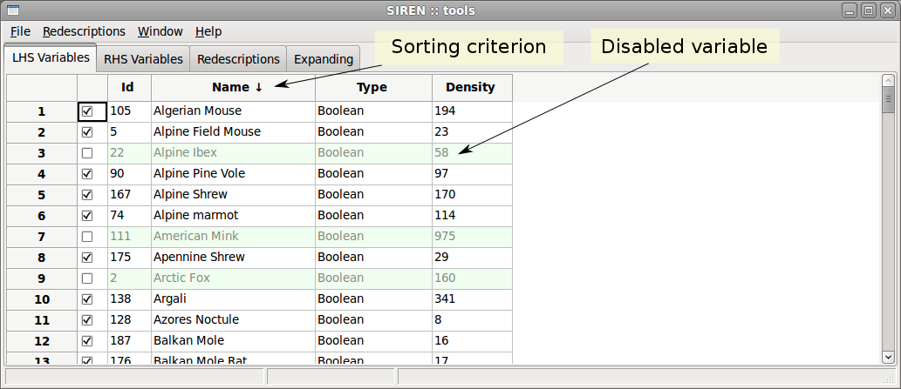Tool panel, redescription list
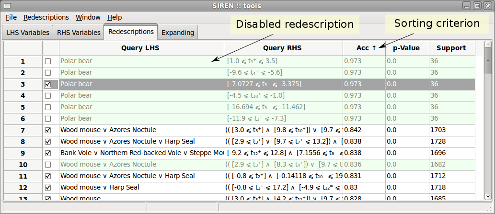Map panel

Use-cases
We now present two example use-cases.
Bio data
The Bio data describes spatial areas of Europe, 2575 squares of side roughly 50 kilometers. The left hand side data contains information about the mammals that live in these areas denoted with the names of the respective species. The minimum, maximum and average monthly temperatures as well as average monthly precipitation, make up the right hand side data, denoted as t+X, t-X, t=X and p=X, respectively, where X is the number of the month. The data comes from two publicly available datasets: European Mammals atlas and Worldclim climate data.
- Double click a variable to show it in a map panel. 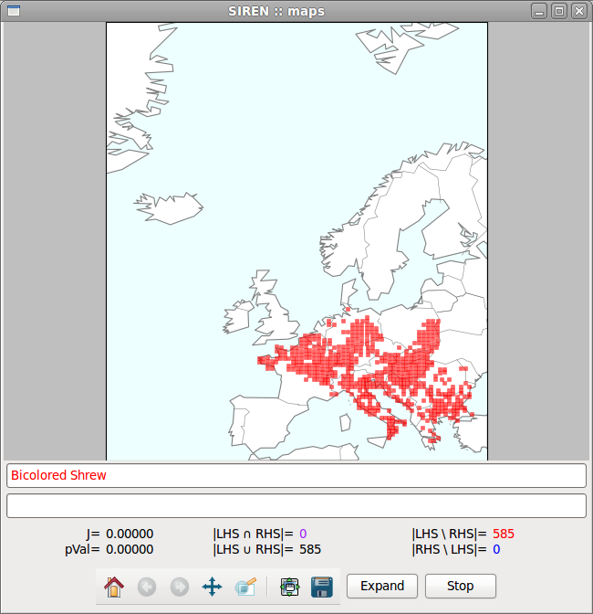
- If you whish not to use some of the variables in this expansion, disable them by unchecking the corresponding box in the variables list of the tool panel. 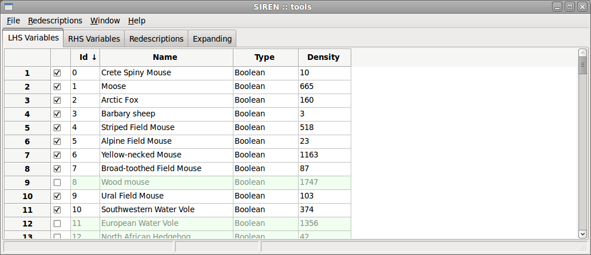
- For example, let's use only monthly average temperature and rainfall, disabling monthly minimium and maximum temperatures.

- Start the expansion by clicking the expand button in the map panel. The best extensions mined are appended to the expansion list in the tool panel. 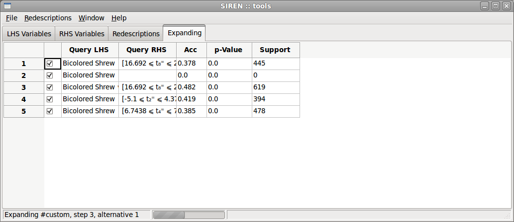
- Expansion is done. The results can be opened in different map panels to be compared, by choosing "View in new window" in the contextual menu. 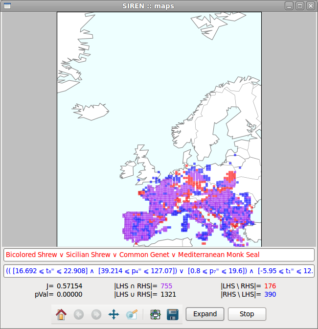
- The list of results can be sorted and filtered. Given a redescription of interest, click filter redundant in the contextual menu to disable all redundant redescriptions, i.e. redescription having too much overlap with it. 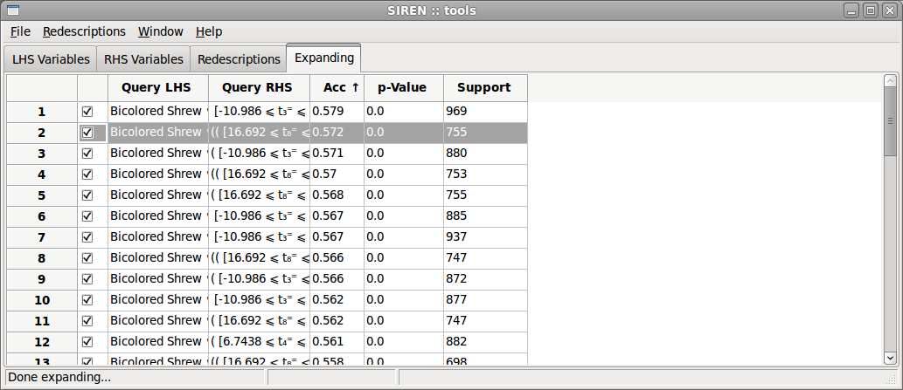
US census and election funds data
The US data describes the counties of continental United-States. The left hand side data contains socio-economic statistical indicators about these areas, see details here. The right hand side consists of data about funding of the electoral campaings in 2006, 2008 and 2010, the total funds, percentage alloted to republican and to democratic party, respectively. The data has been gathered from two public websites: FedStats and Open Secrets.
- Double click a redescription to open it in a map panel. 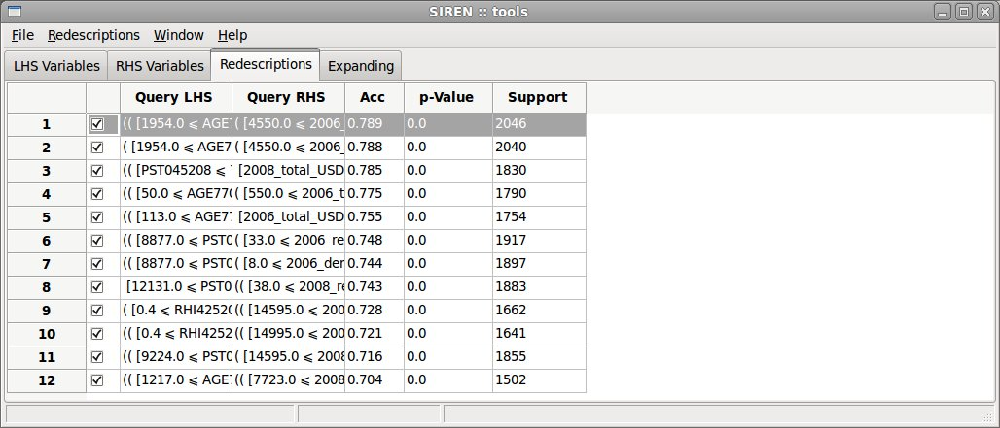 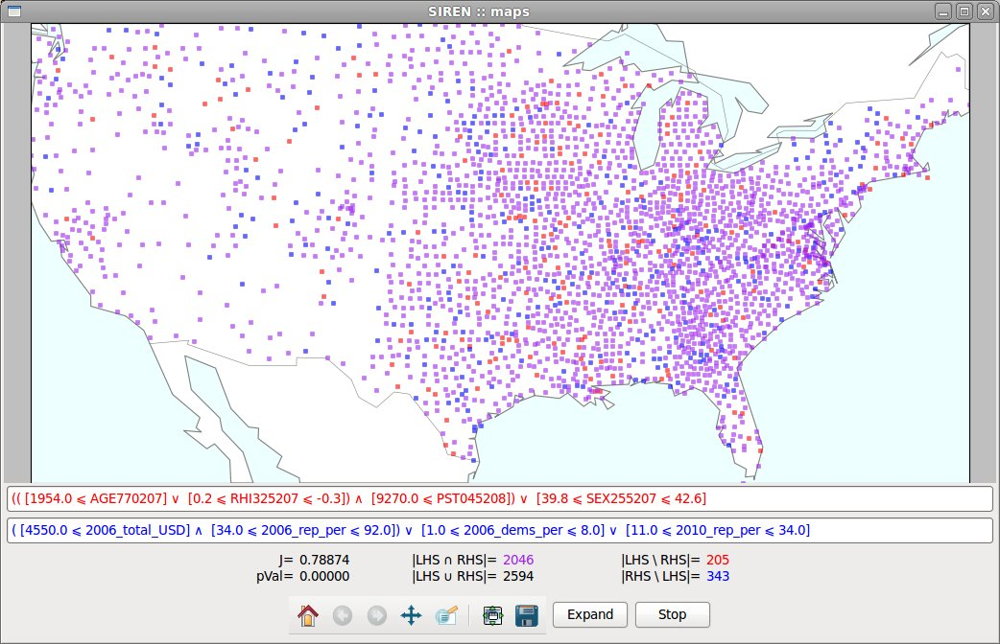
- Edit the redescription. 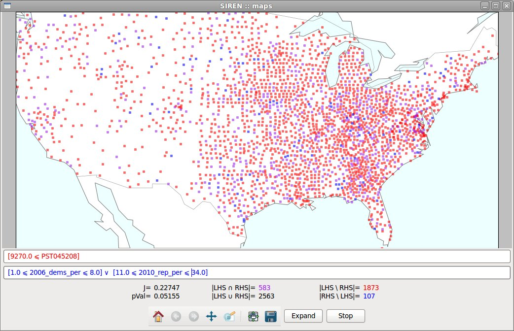
- If you whish not to use some of the variable in this expansion, for example variables used in the previous redescription, disable them by unchecking the corresponding box in the variables list in the tool panel. 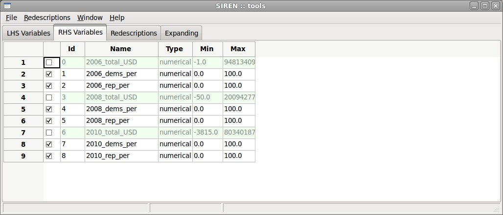
- Start the expansion by clicking the expand button in the map panel. The best extensions mined are appended to the expansion list in the tool panel. 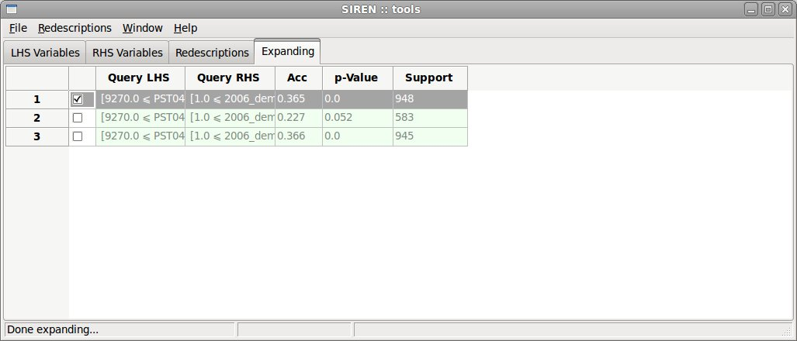
- Expansion is done. The list of results can be sorted and filtered. Given a redescription of interest, click filter redundant in the contextual menu to disable all redundant redescriptions, i.e. redescription having too much overlap with it.
Compatibility
Siren is a multi-platform software. It has been used on MacOS and Ubuntu Linux.
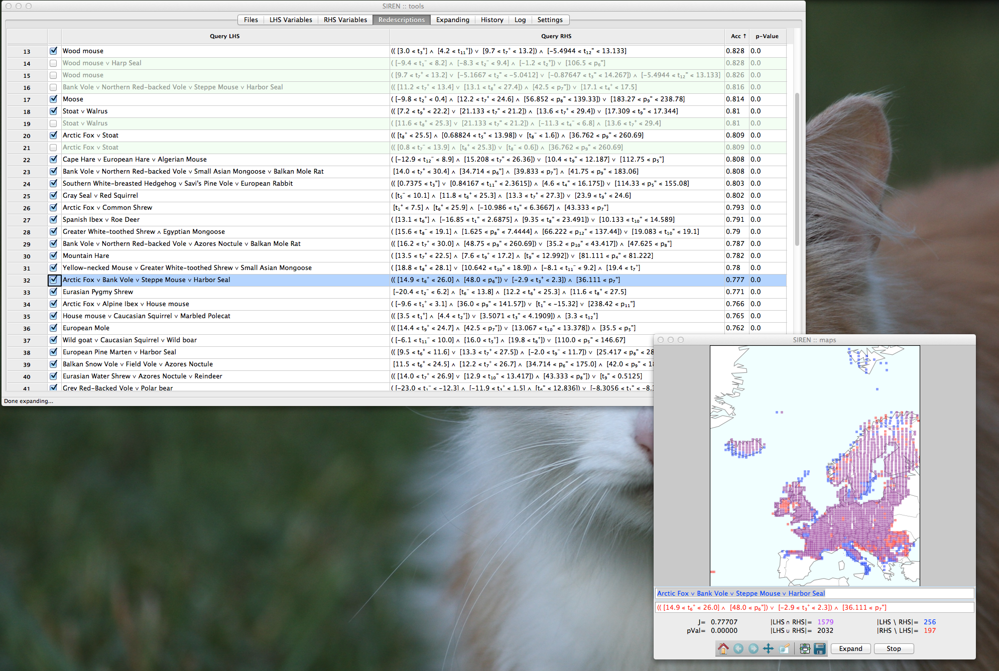
References
- .
- Galbrun, E. & Miettinen, P.
- From Black and White to Full Colour: Extending Redescription Mining Outside the Boolean World
- SDM '11
- 2011, pp. 546-557
- .
- Grinnell, J.
- The niche-relationships of the California Thrasher
- The Auk, 1917, Vol. 34(4), pp. 427-433
- .
- Hijmans, R.J., Cameron, S., Parra, L., Jones, P. & Jarvis, A.
- Very high resolution interpolated climate surfaces for global land areas
- Int. J. Climatol., 2005, Vol. 25, pp. 1965-1978
- .
- Kumar, D.
- Redescription mining: Algorithms and applications in bioinformatics
- Department of Computer Science, Virginia Tech, 2007
- .
- Mitchell-Jones, A.J., Amori, G., Bogdanowicz, W., Krystufek, B., Reijnders, P., Spitzenberger, F., Stubbe, M., Thissen, J., Vohralik, V. & Zima, J.
- The atlas of European mammals
- Academic Press, 1999
- .
- Parida, L. & Ramakrishnan, N.
- Redescription Mining: Structure Theory and Algorithms
- AAAI
- 2005, pp. 837-844
- .
- Pearson, R.G. & Dawson, T.P.
- Predicting the impacts of climate change on the distribution of species: Are bioclimate envelope models useful?
- Global Ecol. Biogeogr., 2003, Vol. 12, pp. 361-371
- .
- Ramakrishnan, N., Kumar, D., Mishra, B., Potts, M. & Helm, R.F.
- Turning CARTwheels: An alternating algorithm for mining redescriptions
- KDD
- 2004, pp. 266-275
- .
- Soberón, J. & Nakamura, M.
- Niches and distributional areas: Concepts, methods, and assumptions
- PNAS, National Academy of Sciences, 2009, Vol. 106(Supplement 2), pp. 19644
- .
- Soberón, J. & Peterson, A.T.
- Interpretation of models of fundamental ecological niches and species' distributional areas
- Biodiv. Inform., 2005, Vol. 2(0)
- .
- Thuiller, W., Lafourcade, B., Engler, R. & Araújo, M.B.
- BIOMOD - a platform for ensemble forecasting of species distributions
- Ecography, Blackwell Publishing Ltd, 2009, Vol. 32(3), pp. 369-373
- .
- Zaki, M.J. & Ramakrishnan, N.
- Reasoning about sets using redescription mining
- KDD
- 2005, pp. 364-373